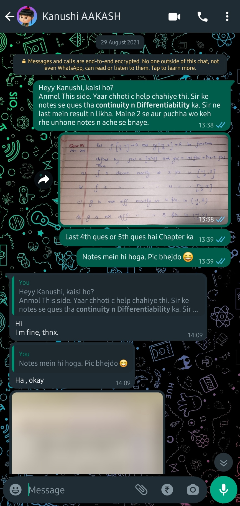

<!DOCTYPE html>
<html lang="en">
  <head>
    <meta charset="UTF-8" />
    <title>Kanumol | Friendship</title>
    <link href="index_ss.css" rel="stylesheet" />
  </head>
</html>

<body>
  <header class="main-header">
    <h1>
      <ion-icon name="heart-circle-outline"></ion-icon>Kanumol<ion-icon
        name="heart-circle-outline"
      ></ion-icon>
    </h1>
    <nav>
      <a href="index.html">Home</a>
      <a href="friendship.html">Friendship</a>
      <a href="#">Dating</a>
      <a href="#">Dates</a>
      <a href="#">Her</a>
      <a href="#">Gallery</a>
      <a href="#">About us</a>
    </nav>
  </header>

  <script
    type="module"
    src="https://unpkg.com/ionicons@5.5.2/dist/ionicons/ionicons.esm.js"
  ></script>
  <script
    nomodule
    src="https://unpkg.com/ionicons@5.5.2/dist/ionicons/ionicons.js"
  ></script>
  <article>
    <h2>How the friendship and crush phase went?</h2>

    <p>
      Our friendship started on 29 August when I sent you this question along
      with some text as in here:
    </p>
    
    <p>
      Then both of us will try to message each other occasionally and meet each
      other in centre, randomly, maybe just to talk I suppose (?)
    </p>
    <p>
      The dates on which we both texted each other, no matter who texted first
      are: 29th, 31st of August; 2nd to 11th, 13th to 18th, 20th to 23rd, 25th
      to 30th September; and the most shocking and loving, the whole month of
      October. There's something related to this in
      <a href="songs_dedicated.html">the songs I dedicated to you</a>
    </p>

    <p>
      Going to take doubts in Aakash together, to asking you on going on date
      and you rejecting it 😔 and giving you chocolates and writing these things
      like this <a href="past_writings.html">in here</a> about you.
    </p>
    <p>Finally on</p>
  </article>
</body>
